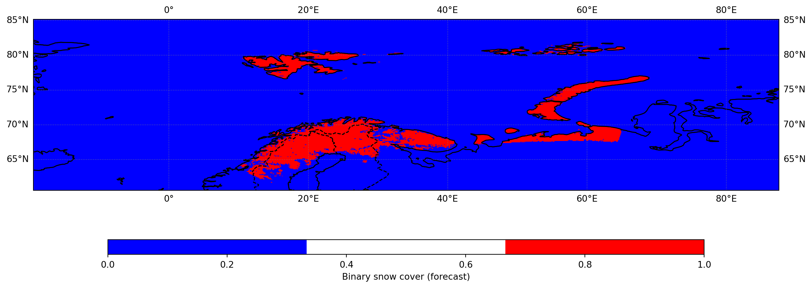
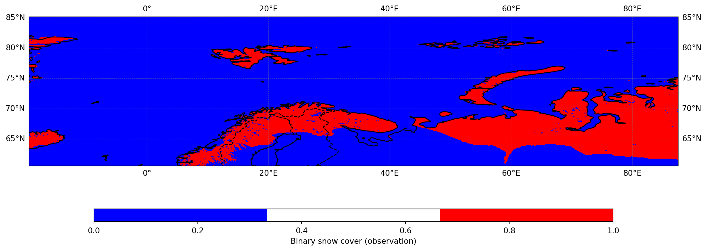

from warnings import filterwarnings
filterwarnings('ignore')
import pandas as pd
from datetime import datetime
import os
import sys
from collections import OrderedDict
import numpy as np
from matplotlib import pyplot as plt
import xarray as xr
import matplotlib.colors as mcolors
import seaborn as sns
import cartopy.crs as ccrs
import cartopy.feature as cfeature
MET_res = "/media/cap/extra_work/CERISE/MET_results"
#color map to plot binary snow
#opening one file
ncfile = "grid_stat_000000L_20160501_000000V_pairs.nc"
nf = os.path.join(MET_res,ncfile)
dataset = xr.open_dataset(nf)
var="FCST_bin_snow_all_all_FULL"
data = dataset[var]
# Create a plot with Cartopy
#fig, ax = plt.subplots(subplot_kw={"projection": ccrs.PlateCarree()})
fig, ax = plt.subplots(figsize=(15, 10), subplot_kw={"projection": ccrs.PlateCarree()}) # Increased figure size
cmap_custom = mcolors.ListedColormap(['blue',"white", 'red']) # Define a custom colormap with two colors
#data.plot(ax=ax, transform=ccrs.PlateCarree(), cmap=cmap_custom, cbar_kwargs={"label": "bin_snow cover"})
plot = data.plot(ax=ax,
transform=ccrs.PlateCarree(),
cmap=cmap_custom,
cbar_kwargs={
"orientation": "horizontal", # Make colorbar horizontal
"label": "Binary snow cover (forecast)",
"pad": 0.1, # Add some padding between map and colorbar
"shrink": 0.8, # Make colorbar 80% of the figure width
"aspect": 40, # Control colorbar thickness
"location": "bottom" # Place colorbar at bottom
})
# Add country borders and coastlines
ax.add_feature(cfeature.BORDERS, linestyle="--", edgecolor="black")
ax.add_feature(cfeature.COASTLINE, edgecolor="black")
# Add country borders and coastlines
ax.add_feature(cfeature.BORDERS, linestyle="--", edgecolor="black")
ax.add_feature(cfeature.COASTLINE, edgecolor="black")
# Add gridlines
ax.gridlines(draw_labels=True, linewidth=0.5, color="gray", alpha=0.5, linestyle="--")
var="OBS_bin_snow_0_all_all_FULL"
data = dataset[var]
fig, ax = plt.subplots(figsize=(15, 10), subplot_kw={"projection": ccrs.PlateCarree()}) # Increased figure size
cmap_custom = mcolors.ListedColormap(['blue',"white", 'red']) # Define a custom colormap with two colors
#data.plot(ax=ax, transform=ccrs.PlateCarree(), cmap=cmap_custom, cbar_kwargs={"label": "bin_snow cover"})
plot = data.plot(ax=ax,
transform=ccrs.PlateCarree(),
cmap=cmap_custom,
cbar_kwargs={
"orientation": "horizontal", # Make colorbar horizontal
"label": "Binary snow cover (observation)",
"pad": 0.1, # Add some padding between map and colorbar
"shrink": 0.8, # Make colorbar 80% of the figure width
"aspect": 40, # Control colorbar thickness
"location": "bottom" # Place colorbar at bottom
})
# Add country borders and coastlines
ax.add_feature(cfeature.BORDERS, linestyle="--", edgecolor="black")
ax.add_feature(cfeature.COASTLINE, edgecolor="black")
# Add country borders and coastlines
ax.add_feature(cfeature.BORDERS, linestyle="--", edgecolor="black")
ax.add_feature(cfeature.COASTLINE, edgecolor="black")
# Add gridlines
ax.gridlines(draw_labels=True, linewidth=0.5, color="gray", alpha=0.5, linestyle="--")<cartopy.mpl.gridliner.Gridliner at 0x7993409013d0>
